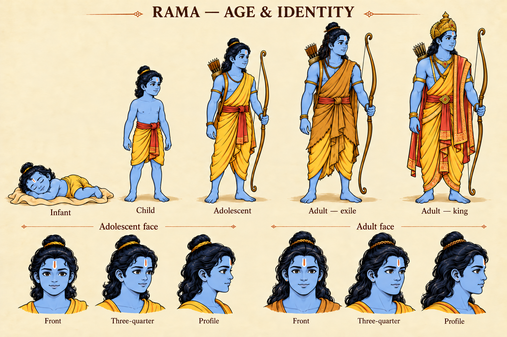
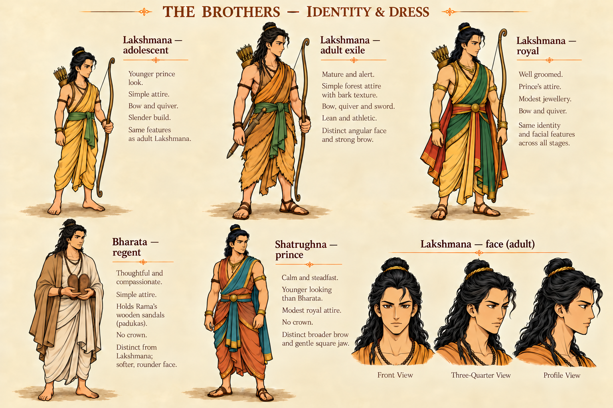

One cast. A lifetime of stories.
Six model sheets for recognisable faces, believable growth and the right appearance in every scene. Inked comic art, richer colour and Vedansh’s warm parchment.
What stays consistent
How to use this sheet
Use this master alongside the nearest accepted scene. Match facial landmarks first, then select age, dress, form, emotion and props separately. Each new panel still needs visual review.
These are labelled authoring references. App artwork will be text-free, with translated narration and balloons rendered separately.
Recognisable without colour.
Rama’s broader oval face and open calm eyes contrast with Lakshmana’s narrower face, high cheekbones, focused eyes and swept forelock. Compare the full sheets in colour or greyscale.


Follow the event, not the book number.
A costume change does not make someone older. A disguise does not create a new character. Flashbacks return to an earlier life stage.
Change the circumstance. Keep the person.
Rama’s exile → coronation
Hair and dress follow an event. Matted locks begin at Guha’s banyan-latex transition. Royal grooming and the crown come after return and coronation, near the end of Yuddha. His facial identity carries through.
Hanuman’s Uttara flashback
Chapter order is not age order. Childhood accounts narrated in Uttara use the child model. The adult ascetic guise and enlarged vanara are separate form states, not new ages.
Source constraints, artistic choices.
Valmiki Ramayana is the working narrative baseline. The source record distinguishes published passage evidence from proposed faces, colours, proportions and costume design.
Consulted sources and evidence coverage
Two publications were compared for Rama’s youth boundary and the brothers’ matted-hair transition. Other facts have the narrower evidence recorded below. The local corpus derives from these publication families and is not an independent third source. Numbering can differ: local Yuddha 131 corresponds to web 128.
What still needs a reference before its scenes are made
Ravana’s complete ten-head/twenty-arm form and ascetic disguise; child Bharata/Shatrughna; Lava/Kusha as infants and later rulers; reduced Hanuman scale; the queens, Jatayu, Angada, Jambavan, Tara, Kumbhakarna, Indrajit and other episode-specific cast. Current sheets are the first principal-cast set.
Four languages, shared scene artwork
Use the same text-free art for Hindi, English, Gujarati and Kannada. Narration and dialogue remain authored text, not text baked into pictures. Balloon bounds, line breaks and reading order can vary by language. Full-story editorial review and native Standard/Large layout checks precede app release.